El secretario de Comunicación del Partido Popular y responsable para Internet , Manuel Atencia , aseguró hoy a EFE que en España no hay tarifa plana para la conexión a la red por problemas técnicos , ya que aún no existe ningún medio de discriminación de voz y datos , salvo el de tecnología ADSL.
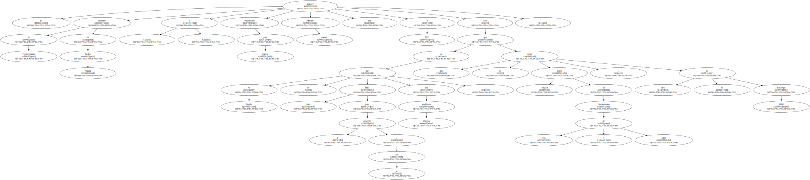Tras su intervención en un foro sobre " El futuro político de Internet " en el marco del congreso Internet 2000 que se celebra esta semana en Madrid , Atencia aseguró que el PP se ha comprometido a establecer una tarifa plana " cuando sea posible " , un plazo que no se atrevió a aventurar.

Explicó que la tecnología ADSL es la única que establece tarifa plana , aunque reconoció que no es " muy económica " y que su implantación en España es escasa.
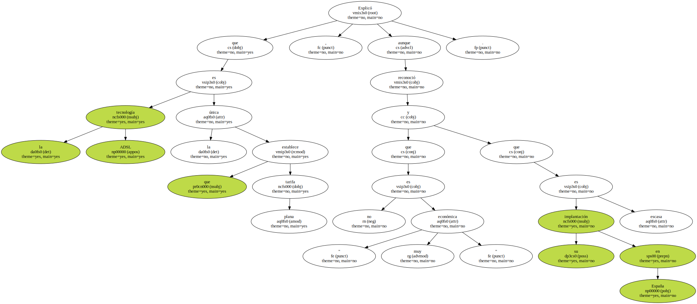El secretario de Comunicación del PP aseguró durante su intervención en el foro , en la que expuso el programa sobre las nuevas tecnologías que el gobierno propondrá en la próxima legislatura que el acceso a Internet es un derecho básico y universal , por lo que no puede existir discriminación alguna.
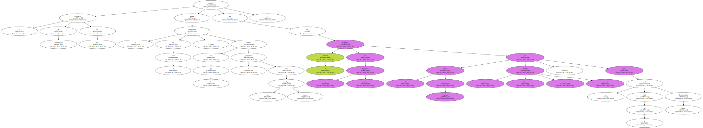En este sentido , el PP propone la creación de una tarifa plana y asequible ( tal y como anunció ayer el presidente del Gobierno ) , la extensión de una red de alta capacidad por todo el territorio nacional que llegue a las poblaciones rurales y a la que se acceda desde bibliotecas , oficinas de la Administración o edificios públicos.
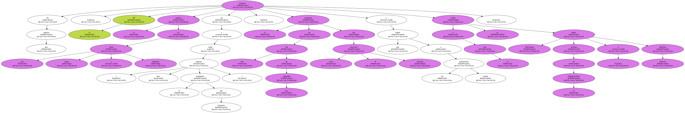Además , el PP va a plantear la posibilidad de crear " un plan renove " para ordenadores que preste especial interés a las pymes y a las personas con rentas más bajas , así como alcanzar la plena cobertura de telefonía móvil digital en el territorio español.
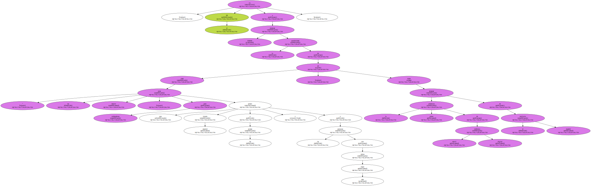El portavoz del PSOE en la Comisión de Internet del Senado , Josep Módol , aseguró , después de haber escuchado al representante del PP , que " todos conocemos las prioridades " que existen en el mundo de las telecomunicaciones , pero " lo que hay que hacer es hacerlas realidad ".
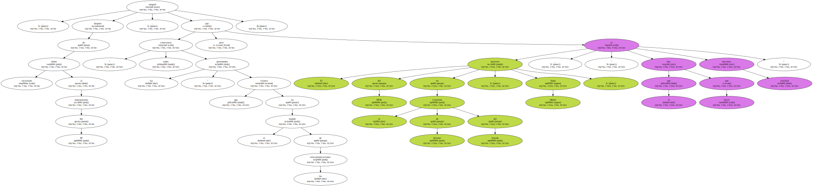Módol aseguró que el programa socialista sobre nuevas tecnologías es el principal del partido y que recibe el nombre de " la educación , la ciencia y las nuevas tecnologías " , para enfatizar la importancia que tiene educar a todos los ciudadanos en este terreno.
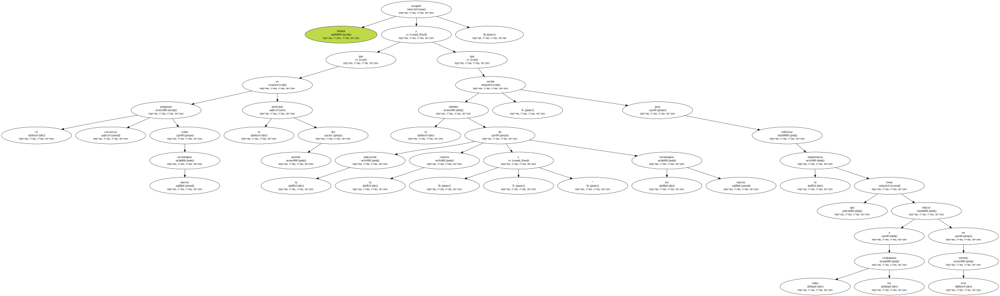Sus propuestas se basan en que se aplique una tarifa plana " desde ya " inferior a las 3.000 pesetas al mes durante el día y 1.000 por la noche ; que todos los centros sanitarios cuenten con servicios de banda ancha ; que todos los médicos de zonas rurales tengan acceso gratuito a Internet y que se cree una autoridad europea que arbitre y permita a la UE competir con los Estados Unidos.
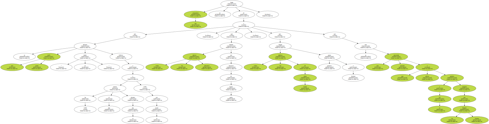El representante en el foro de IU , su diputado en la Asamblea de Madrid Luis Miguel Sánchez , declaró que su partido propone que el acceso a Internet sea gratuito y subvencionado a través de los Presupuestos Generales del Estado.
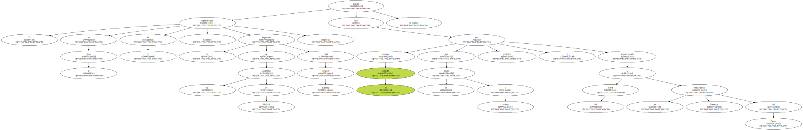Además , IU apoya la creación de centros de recursos telemáticos para que quien no tiene ordenador o acceso a red pueda conectarse a Internet de forma que todos los ciudadanos tengan una fuente de información y , por lo tanto , posibilidad de aumentar su nivel de educación y su capacidad de trabajo.
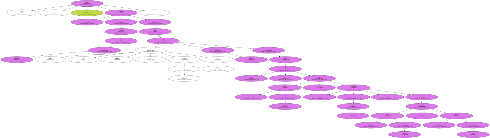El presidente de la Sectorial de Comunicación de Convergencia Democrática de Cataluña , Santiago Miralles , expresó la necesidad que percibe su partido de que las nuevas tecnologías sea un tema " obsesivo " para el Gobierno , que se creen planes estratégicos y que exista un respaldo parlamentario y presupuestario a este tipo de iniciativas.
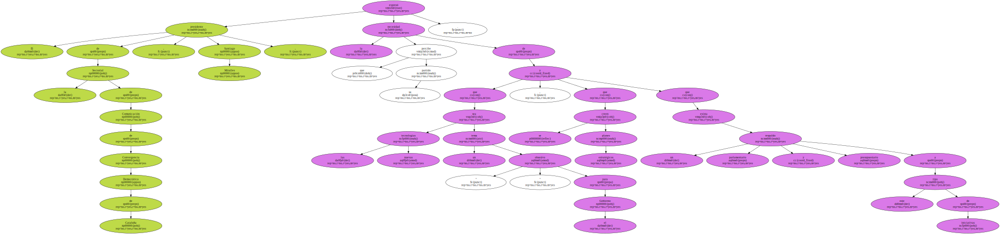Además , CiU propone la creación de un órgano coordinador de la relevancia de un ministerio , la adopción de medidas intersectoriales que afecten a todos los ámbitos de la sociedad , que se fijen objetivos " realmente ambiciosos " y un marco fiscal , laboral y jurídico " apropiado ".
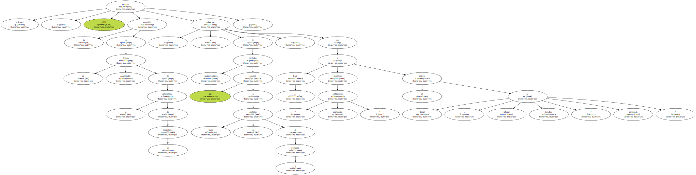